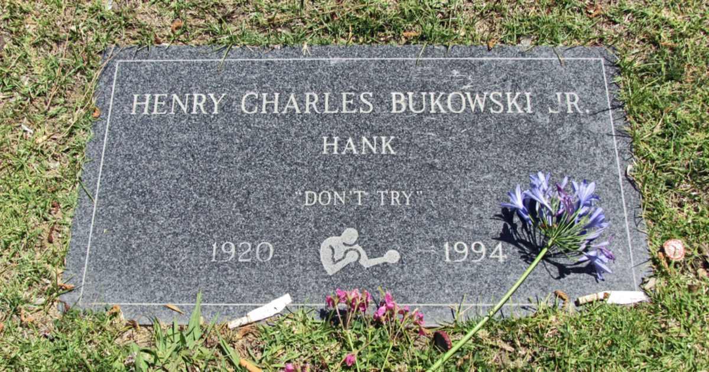

Почему в уходе за кожей не стоит «пытаться» слишком сильно: урок Буковски
Надгробие Чарльза Буковски носит лаконичную надпись «Don't try» — «Не пытайся». Эта фраза, ставшая эпитафией писателя, на удивление точно описывает главную ошибку в домашнем уходе: стремление ускорить результат за счёт избытка средств и процедур. В доказательной косметологии, как и в творчестве, устойчивый эффект даёт не напряжённая активность, а регулярность и соответствие реальным потребностям кожи.
Философия ненасилия в отношении барьера
Буковски писал о жизни как о боксерском ринге, где победа — это умение выстоять, а не нокаутировать соперника с первого раунда. То же самое справедливо для гидролипидного барьера: агрессивное очищение, ежедневные кислотные пилинги и слоистые «сэндвичи» из активов не ускоряют обновление, а провоцируют воспаление, сухость и чувствительность. Кожа не требует героических усилий — ей нужна предсказуемая рутина, где каждое средство имеет чёткую функцию и не дублирует действие соседнего.
Когда мы пытаемся «вылечить» кожу за неделю перед событием, нарушается баланс микробиоты и липидного мантия. Восстановление барьера после такого штурма уходит на недели, а внешний эффект оказывается кратковременным. Доказательный подход подразумевает выбор мягкого очистителя с pH 4,5–5,5, барьерные кремы с керамидами, холестерином и свободными жирными кислотами, а также защиту от ФС — база, которая работает накопительно и без драмы.

Ритуал вместо импровизации
Писатель не ждал вдохновения — он садился за машину каждый день, независимо от настроения. В уходе за кожей регулярность важнее интенсивности: ретиноид, наносённый дважды в неделю годами, даст более заметную плотность дермы, чем курсы высоких концентраций с перерывами в месяц. Кожа адаптируется к активным ингредиентам через рецепторную толерантность, и этот процесс не терпит спешки — он требует системности и постепенного наращивания дозы.
Импровизация в виде хаотичной смены брендов, смешивания несовместимых активов (например, чистый витамин С и ретиноид в одном приложении) или пропусков базового ухода создаёт хаос, который кожа тратит ресурсы на компенсацию. Простой алгоритм — очищение, коррекция, увлажнение/защита — выполняемый ежедневно, даёт предсказуемую динамику. Специалист поможет подобрать концентрации и частоту, но дисциплина выполнения остаётся за вами.

Принятие генетики и возраста
Не пытайся» — не призыв к пассивности, а к честности с собой. Буковски не пытался быть кем-то ещё; он писал о том, что знал. Кожа также имеет генетический предел: поры не «закрываются» навсегда, морщины мимики не сглаживаются кремами, пигментация после воспаления уходит месяцами. Попытки бороться с физиологией приводят к разочарованию и излишним тратам. Реалистичная цель — здоровый цвет, упругость, комфорт и замедление фотостарения, а не стирание биографии с лица.
Понимание своих ограничений позволяет выстроить стратегию без фанатизма. Если есть склонность к куперозу — исключаем трауматические скрабы и горячую воду. Если к акне — избегаем комедогенных масел и контролируем инсулиновый отклик диеты. Врач-дерматолог или косметолог с клиническим мышлением поможет отделить маркетинговые обещания от протоколов с доказательной базой. Уважение к своей коже начинается с отказа от войны с ней.
Минимализм как стратегия долголетия
В поздних стихах Буковски отбрасывал лишнее, оставляя только точное слово. В косметологии минимализм — это не экономия, а снижение риска контактного дерматита, раздражения и накопления ингредиентов, которые не взаимодействуют друг с другом. Два-три проверенных актива в рутине (например, ретиноид вечером, антиоксидант утром, ФС круглый год) работают предсказуемее, чем десятикомпонентные схемы, где невозможно выявить причину реакции.
Каждое новое средство вводится по одному с интервалом две недели — так называемый патч-тест в быту. Это позволяет зафиксировать толерантность и эффект без шума. Профессиональные процедуры (лазер, микронидлинг, пилинги средней глубины) вписываются в план как усилители, а не замена домашнему уходу. Результат накапливается годами, и в этом сходство с литературным наследием: ценность определяется не громкостью заявлений, а глубиной проработки деталей.
Коротко: Главный принцип доказательного ухода — регулярность мягких действий вместо эпизодических штурмов. Кожа отвечает на предсказуемость, а не на интенсивность.
Какое средство в вашей рутине вы используете дольше всего и почему не меняете его?